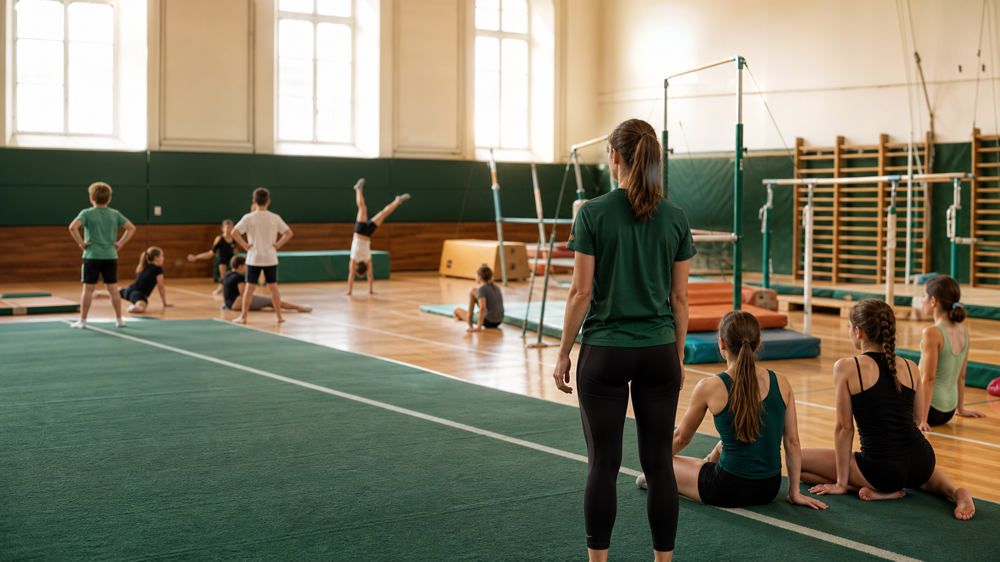

Moderner Turnbetrieb
Klare Gruppen, verlässliche Betreuung und Training mit Blick auf Technik, Freude und Entwicklung.

Turnen in Wien seit Generationen
Bewegung, Technik und Gemeinschaft in einem modernen Trainingsumfeld. Kinder- und Jugendgruppen sind derzeit voll, Anfragen bleiben möglich.
Klare Gruppen, verlässliche Betreuung und Training mit Blick auf Technik, Freude und Entwicklung.
Ein ruhiger, kraftvoller Grünton prägt den neuen Auftritt: sportlich, frisch und wiedererkennbar.
Einfache Anmeldung per Mail, faire Vormerkung nach Alter und Gruppe – und rasche Rückmeldung, sobald ein Platz frei wird.
Turnstunden Angebot
Kinder- und Jugendgruppen sind aktuell ausgebucht. Wettkampfturnen erfolgt über Empfehlung des Trainerteams. Erwachsene können direkt anfragen.
4-6 Jahre
Für Kinder von 4 bis 6 Jahren. Spielerischer Einstieg mit einfachen Bewegungsaufgaben, Koordination, Gleichgewicht und sicherem Ankommen in der Turnhalle.
6-9 Jahre
Für Kinder von 6 bis 9 Jahren. Grundlagen werden klarer, Übungen werden strukturierter und der Spaß an Bewegung bleibt im Zentrum.
10-14 Jahre
Für Jugendliche von 10 bis 14 Jahren. Mehr Technik, mehr Kraft und mehr Selbstständigkeit in einer Gruppe mit klaren Trainingszielen.
8-14 Jahre, nach Absprache
Für Kinder und Jugendliche von 8 bis 14 Jahren, je nach Absprache mit den Trainerinnen und Trainern. Das Training findet freitags statt.
ab 15 Jahren
Für alle ab 15 Jahren. Aktives Training für Kraft, Mobilität und turnerische Grundlagen in einem strukturierten Vereinsumfeld.
Interaktiver Finder
Ein paar kurze Fragen beantworten, dann schlägt die Website die passende Gruppe und den nächsten Schritt vor.
Vorschlag
Für Kinder von 4 bis 6 Jahren: spielerischer Einstieg, Koordination und erste Turngrundlagen.
Diese Warteliste anfragenWochenplan
Wähle einen Tag aus und sieh direkt, welche Turnstunden stattfinden. Wartelisten gelten für Kinder- und Jugendgruppen.
Montag ausgewählt: Wähle eine Stunde, um Details zu sehen.
Trainingsszenen
Eine kleine interaktive Gerätewand: Jede Auswahl verändert Fokus, Text und Bewegungsimpuls.

Fokus
Rollen, Stützen, Körperspannung und sichere Landungen bilden die Basis für vieles, was später an Geräten gebraucht wird.
Trainerteam
Spaß an Bewegung von den ersten Schritten bis zum Wettkampf.
Profil ansehenRuhige Begleitung und klare Übungen.
Profil ansehenTechnik, Körperspannung und Grundlagen.
Profil ansehenEnergie, Übersicht und Freude an Bewegung.
Profil ansehenKraftaufbau und sichere Progressionen.
Profil ansehenSpielerischer Zugang und viel Geduld.
Profil ansehenTraining für Damengymnastik.
Profil ansehenRuhiger Aufbau und klare Hilfestellung.
Profil ansehenGeschichte
Der Erste Wiener Turnverein steht für die Idee, dass Turnen mehr ist als Sport: Es verbindet Disziplin, Körpergefühl und Gemeinschaft. Aus dieser Tradition entsteht heute ein lebendiger Verein, der Kindern, Jugendlichen und Erwachsenen einen strukturierten Raum für Bewegung bietet.
Vereinsgefühl
Turnen bedeutet Gemeinschaft, Verlässlichkeit und die Freude daran, sich Schritt für Schritt weiterzuentwickeln.
Warteliste & Ablauf
Ja. Auch wenn derzeit kein Platz in den Kinder- oder Jugendgruppen frei ist, kann Ihr Kind auf die Warteliste der passenden Turnstunde gesetzt werden. Sobald ein Platz frei wird, werden Sie per E-Mail kontaktiert.
Die Kinder werden nach dem Zeitpunkt der eingegangenen Anfrage gereiht und in die entsprechende Warteliste aufgenommen.
Ihr Kind bleibt auf der Warteliste, bis ein passender Platz frei wird. Eine erneute Anmeldung ist nicht notwendig.
Sobald ein Platz frei ist, erhalten Sie eine E-Mail. Bitte antworten Sie innerhalb von zwei Wochen. Erfolgt innerhalb dieser Frist keine Rückmeldung, wird das Kind von der Warteliste genommen und der Platz dem nächsten Kind angeboten.
Ja. Die Wartelisten werden während des gesamten Turnjahres regelmäßig aktualisiert. Sobald ein Platz frei wird, kann ein Kind auch unter dem Jahr einsteigen.
Ja. Sobald Ihr Kind aufgenommen wurde, ist es Mitglied des Vereins und hat einen festen Platz im Verein. Je nach Alter und Entwicklung kann es später in eine passende andere Turnstunde aufsteigen.
Bei den Kleinkindergruppen dürfen Eltern während der ersten drei Turnstunden dabei sein. Danach sollen die Kinder ohne Begleitung teilnehmen. So können sie sich besser auf die Turnstunde konzentrieren und werden nicht dadurch abgelenkt, dass sie zwischendurch zu ihren Eltern laufen oder etwas zeigen möchten.
Straßenschuhe sind in der Turnhalle nicht erlaubt. Die Kinder können barfuß, mit rutschfesten Socken oder mit Turnpatschen teilnehmen.
In der Turnhalle selbst darf nicht gegessen oder getrunken werden. Im Verein gibt es aber eine Trinkecke, in der die Kinder trinken dürfen. Bitte geben Sie Ihrem Kind daher immer eine Wasserflasche mit.
Bei Krankheit dürfen TurnerInnen aus Sicherheitsgründen nicht am Training teilnehmen. Möchte ein Kind dauerhaft nicht mehr teilnehmen, kann es per E-Mail oder persönlich bei den Trainerinnen und Trainern abgemeldet werden.
Kontakt
Bitte Name, Alter, gewünschte Gruppe und mögliche Trainingstage angeben. Für Kinder- und Jugendgruppen läuft die Anfrage über die Warteliste.